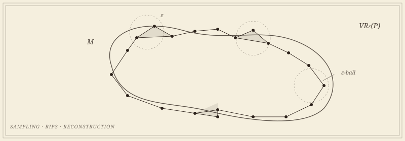

Sushovan Majhi
Research
Applied Topology · Computational Geometry · Mathematical Foundations of ML
Seven active projects · three movements
Updated MMXXVI

“Inference where the manifold hypothesis fails—with certificates, and with proofs of where certificates cannot exist.”
One question runs through the work: inference for data where the manifold hypothesis fails—at branch points, corners, intersections, and vanishing reach—with certificates, and with proofs of where certificates cannot exist. Data rarely lives on a smooth manifold of positive reach; it lives on graphs with branch points, on shapes with corners, on unions that intersect, on spaces whose reach vanishes. The program asks what can still be inferred there, and proves where the answer is no. It runs in three movements, with topology and geometry as the lens. First, the theorems: when a finite sample remembers the shape it was drawn from, when a Vietoris–Rips complex is homotopy-equivalent to the ground truth, when the Gromov–Hausdorff distance between two metric spaces is even computable. Second, the guarantees: what a topological descriptor is forbidden to lose once it is handed to a classifier or read off a neural network, and when two populations of diagrams can honestly be said to differ. Third, the data—climate, fluid mechanics, geophysics, ecology—where the theorems get tested. Euler calculus, the humblest invariant in the subject, is the workhorse that runs through all three. The movements keep each other honest, and, on bad days, mutually embarrassed.
The recurring scaffolding of a result is austere: under sampling condition X and parameter range Y, the constructed complex is homotopy-equivalent (or quasi-isometric, or close in the Gromov–Hausdorff distance) to the ground truth. The work is in finding X and Y at once weak enough to hold in practice and strong enough to be useful. The proofs, when they come, tend to be apparently simple in retrospect—which is a polite way of saying they took a long time.
What is constant across the work: a discomfort with descriptors that classify well but explain nothing, and a corresponding insistence that any pipeline used in earnest should come with a written guarantee of when it can be trusted, and when it cannot.
First movement: the theorems
From finite samples to homotopy equivalence, and the distances that measure the gap.
Provable methods for shape, graph, and manifold reconstruction, and for comparing shapes once reconstructed. The objects of study are simplicial complexes built from finite samples—Vietoris–Rips, Čech, alpha—and the questions, as the frontispiece insists, are about when and how faithfully such complexes recover the topology and geometry of an unknown ground truth. The tools are inherited from algebraic topology, metric geometry, and computational geometry—all three considerably older than the data they have lately been asked to analyze.
The current open questions: a lower bound for the Gromov–Hausdorff distance to a manifold with boundary, where the closed-manifold argument breaks at the collar; the dimension at which approximating the Gromov–Hausdorff distance becomes hard, now that the plane is known to admit a constant factor; graph reconstruction by Vietoris–Rips shadows in every ambient dimension; and an intrinsic, Whitney-type characterization of the metric spaces that are close to metric graphs.
Second movement: the guarantees
A bound in both directions, or no certificate at all.
The largest of the three movements, and the one growing fastest. Its premise: a learning pipeline used in earnest should come with a written guarantee, and topology is unusually good at supplying one. It runs in three strands.
- Certified topological learning: the landmark framework. Every vectorization of a persistence diagram in the literature carries a bound in one direction, guaranteeing that nearby diagrams stay near; almost none forbids distinct diagrams from collapsing together. The landmark embeddings PLACE and PALACE supply that second bound, in closed form and without training, which is what makes a per-prediction certificate possible. With a statistician colleague, a minimax inference theory makes them testable on populations of diagrams: whether two populations differ, where in the birth–death plane, and with how many samples. The framework now reaches multiparameter persistence, where the same two-sided bound holds, and it ships in
akriti, the open-source software project I founded and lead. - Topology inside neural networks. A sentence like layer ℓ+1 is more disentangled than layer ℓ has long been an eyeball judgment with no null; the intersection Euler characteristic profile turns it into an exact test. The same discipline audits memorization, in generative models and in classifiers.
- Topology in time series and dynamics. The Euler characteristic surface and its mixup profile, the cheapest invariants in the subject, with the Euler calculus that says what they can see, carry the program to time series and climate, where a transition is a coordinate rather than a label; persistence and networks carry it to markets.
The current open questions: certification beyond a single witnessing coordinate, where every landmark embedding, the multiparameter one included, currently stops; what a trained network has memorized, stated as a test rather than a score; and the stability of Euler signatures under projection from three dimensions to two, which is what a camera does to a flow.
Third movement: the data that asked
A domain expert, a dataset, and the question of whether there is structure in it.
Applications are where the theorems get tested, on data that is unrepentantly high-dimensional but suspected, often correctly, of living on something simpler. Recent collaborations have hunted monsoon onsets and the topology of the polar vortex, recovered the geometry of a subduction zone from earthquake hypocenters, and located thresholds in plant communities across a Superfund contamination gradient. The longest-running is in a two-phase flow laboratory at Montana Tech, where the Euler characteristic has become an instrument: it gave churn flow a mathematical definition and corrected a classical flow-regime map.
A working assumption: every applied problem starts with a domain expert pointing at a dataset and asking, is there structure in here? The topologist’s contribution is to make that question precise enough to admit a theorem, and the descriptor (a persistence diagram, an Euler characteristic surface, a Reeb graph) general enough to be plugged into a downstream classifier without further apology.
Active projects
Seven projects across the three movements.
Each project is a corner of the broader program. Click a card for collaborators, papers, and the longer description.


Publications and the rest of the file
Papers, preprints, and a thesis.